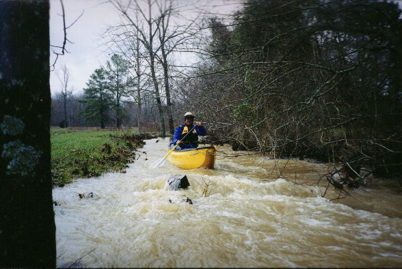
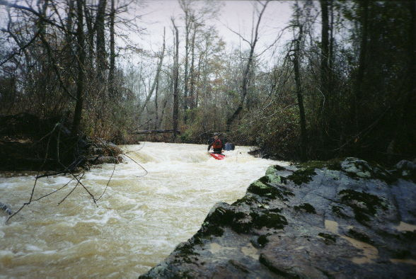
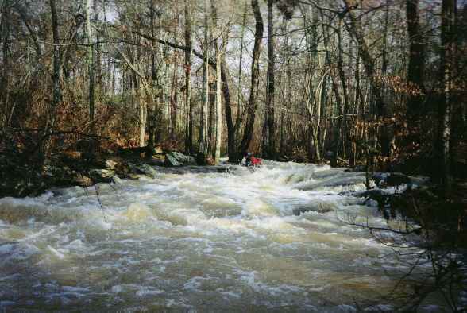
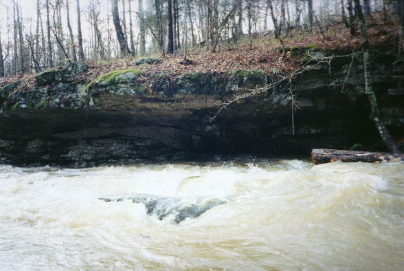

|  | The top just below the bridge is truly farmers back yard ditch micro. Any tree can block this. |
|  | Gary on a typical drop. You'll note the log in the background. At least you could go under that one. |
|  | Gary and his Ultrafuge C-1 do a little submerged log spin-o-rama. |
|  | A rockhouse with a little drop next to it which would come into play at even higher water. |